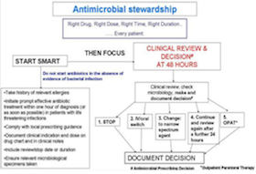

These guidelines are intended to provide a guide for the use of antibiotics in the empirical setting. Regular review of the patient is essential and treatment should always be reviewed in light of changes in clinical condition or if a specific pathogen(s) is isolated. The guidelines are based on the known prevalent organisms in the community and the hospital at this time. It is important that antibiotic usage is controlled in hospital; as usage may result in serious consequences for the patient such as allergic responses or Clostridium difficile associated diarrhoea. Antibiotics should be based on rational clinical grounds and should not be prescribed for minor infections or prophylactically except in situations where their value is proven.
Key principles of antibiotic use" "Start Smart - the Focus"
When prescribing antibiotics all cinicians should
Start Smart
• Do not start antibiotics in the absence of clinical evidence of bacterial infection
• If there is evidence/suspicion of bacterial infection, use these local guidelines to initiate prompt effective antibiotic treatment within one hour of diagnosis (or as soon as possible) in patients with life threatening infections (Avoid inappropriate use of broad-spectrum antibiotics).
• Document on drug chart and in medical notes: clinical indication, duration or review date, route and dose. Antibiotics in hospitals are often continued unnecessarily because clinicians caring for the patient do not have information indicating why the antibiotics were initially commenced and how long they were planned to be continued. Ensuring that all antibiotic prescriptions are always accompanied by an indication and a clear duration or review date will help clinicians change or stop therapy when appropriate.
• Obtain Cultures First. Knowing the susceptibility of an infecting organism can lead to narrowing of broad-spectrum therapy, changing therapy to effectively treat resistant pathogens and stopping antibiotics when cultures suggest an infection is unlikely. Where urgent processing of a specimen i.e.: a Gram stain/cell count/processing of CSF is indicated, contact the microbiology department during normal working hours (ext 5303) or outside of normal working hours contact the medical scientist on call via switchboard.
• Take account of:
Recent culture reports i.e.: knowing a patient has a resistant organism such as MRSA or ESBL - (extended spectrum beta-lactamase) may require modification of empirical therapy.
Prior use of broad spectrum antibiotics – for example giving the same antibiotic to a patient who has only just finished a recent course for a new episode of sepsis is likely to be inappropriate, as the bacterial flora may now be resistant.
History of true allergy – take account of the nature of the allergy as often times patients can confuse side-effects as an allergic response. In the case of penicillin allergy if history is one of an anaphylactic response avoid all penicillins and cephalosporins (see page 52). Erythromycin is often not an appropriate substitute for an allergy, contact microbiologist if unsure.
Antibiotic spectrum: For example, meropenem, piperacillin/tazobactam and co-amoxiclav have good anaerobic cover; concurrent metronidazole is rarely indicated
Potential side effects: Certain antibiotics such as cephalosporins, clindamycin and quinolones are clearly associated with C. difficile infection (CDI) and should only be prescribed in accordance with these guidelines or discussion with consultant microbiologist.
Pregnancy: Evidence indicates that beta-lactam antibiotics (e.g. penicillins) are considered to be amongst the safest antimicrobial agents to use in pregnancy.

• In the vast majority of surgical procedures, where antibiotic prophylaxis has been shown to be effective, just one dose of appropriately timed antibiotics is required. Critical to this advice is that the single dose is administered 30 minutes prior to surgical incision to enable peak blood levels to be present at the start of the surgical procedure. A repeat dose of antibiotic prophylaxis may be required when the operation is prolonged or where there is significant blood loss. A treatment course of antibiotics may also need to be given (in addition to appropriate prophylaxis) in cases of contaminated surgery or in the presence of infected wounds.
Then Focus
• Review the clinical diagnosis and the continuing need for antibiotics by 24-48 hours and make a clear plan of action - the “Antimicrobial Prescribing Decision” Antibiotics are generally started before a patient's full clinical picture is known. By 24-48 hours, when additional information is available, including microbiology, radiographic and clinical information, it is important for clinicians to re-evaluate why the therapy was initiated in the first place and to gather evidence on whether there should be changes to the therapy. Remember organisms will always grow from non-sterile sites (e.g. ulcers) but may not be clinically relevant
• Key Antimicrobial Prescribing Decision options are Stop, Switch, Change or Continue:
1. Stop antibiotics if there is no evidence of infection
2. Switch antibiotics from intravenous to oral if indicated
3. Change antibiotics – ideally to a narrower spectrum – or broader if required
4. Continue and review again at 72 hours
It is essential that the review and subsequent decision is clearly documented in the medical notes.
